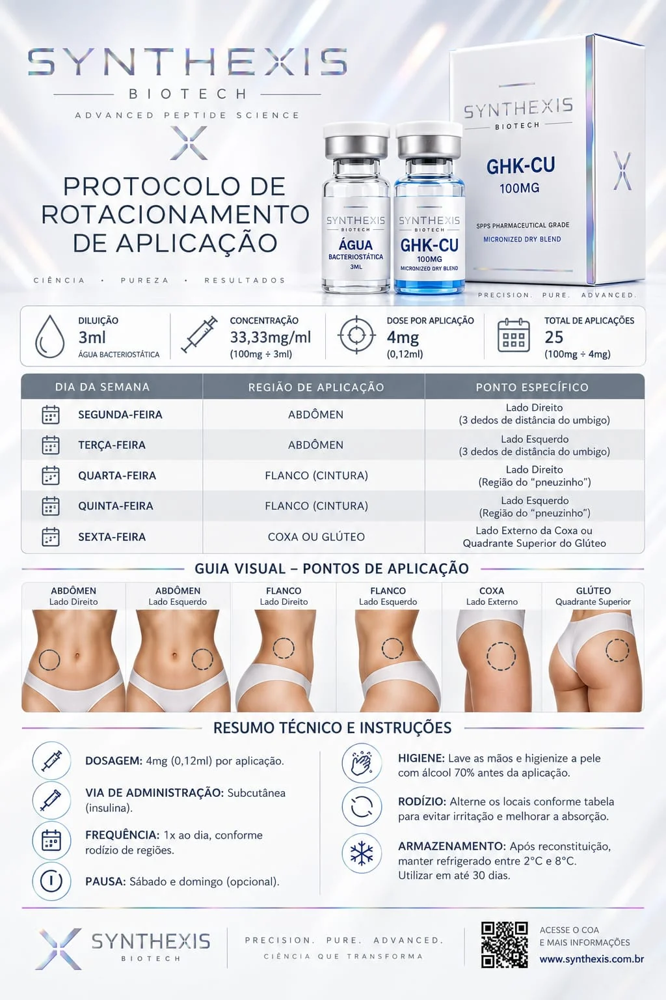

Guia Técnico
GHK-Cu
A aplicação do peptídeo de cobre deve seguir critérios estritos de saturação molecular celular. Selecione o protocolo correspondente aos seus objetivos fisiológicos.
Foco Estético &
Anti-aging
Desenvolvido exclusivamente para a reestruturação da matriz extracelular, atenuação de linhas finas e indução profunda da síntese de colágeno endógeno.
Recuperação Estrutural
(Lesões)
Focado na aceleração drástica da regeneração de tecidos moles, tendões, modulação inflamatória aguda e otimização pós-treino intensivo.
Revitalização
Capilar
Atua diretamente no bloqueio da miniaturização folicular, aumentando a vascularização local do couro cabeludo e expandindo a fase anágena.
Tabela Oficial de Dosagem

Padrão Tático de Medição - Referência de Calibragem
Protocolo em Imagem
Vídeo do Protocolo
Seu vídeo com o protocolo está sendo carregado...
Dúvidas adicionais sobre diluição e reconstituição molecular?
Falar com Especialista